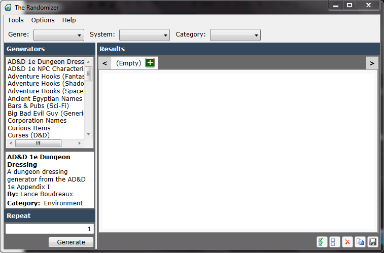

The main screen is where the random generation magic happens. Here you select the type of generation you want to occur, how many times, and more then press Generate to see the magic. Below is a break down of each section of the screen including it's purpose, and how to use it.

You can filter the list of generators based on genre using this combo box. No filter will be applied if Genre is left blank.
This combo box will filter the results by the role playing system that they are intended to be used for. No filter will be applied if System is left blank.
From this comb box, you can filter the generators by their category. No filter will be applied if Category is left blank.
This is the list of generators found for the category selected above. Just like the availability of items in the Category drop down, this list depends upon the installed grammar files. You will select an item in this list to determine what will be generated in the results.
Below the generator list, you will see details about the generator that is currently highlighted in the list.
If a grammar file requires parameters, they will appear directly below the type list upon selecting that grammar.
Some grammars allow you to limit the length of the content generated. This is most common in random name generators which could theoretically lead to nearly endless names.
The value of this field will determine how many times the generator will generate items. It is possible to generate from 1 to 500 items in a list. Individual results are delineated by the alternating background colors. In addition to typing the number in, you can also use the up and down arrows on your keyboard to increase and decrease the number.
The results display in a tabbed interface allowing you to maintain results you liked as you work with the application. Clicking on the + button of the tab header will create a new tab. All results generated go to the currently selected tab. They can easily be selected and copied as desired. The buttons at the bottom of this area Select All, Select None, Clear, Copy, and Save simplify this process.
Created with the Personal Edition of HelpNDoc: Write EPub books for the iPad